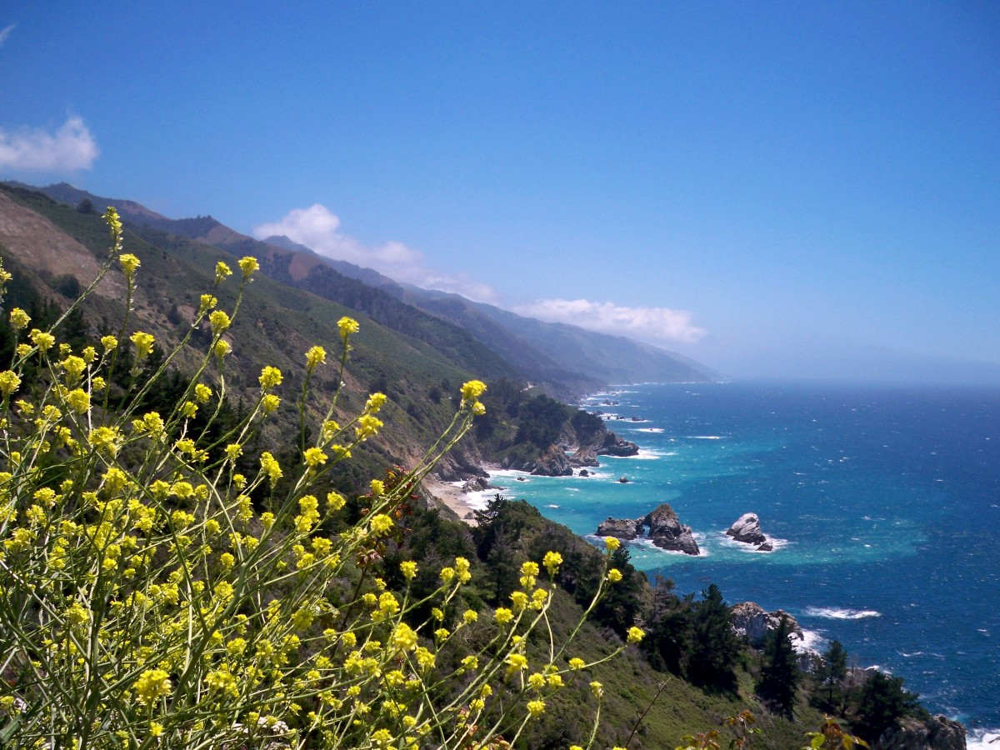
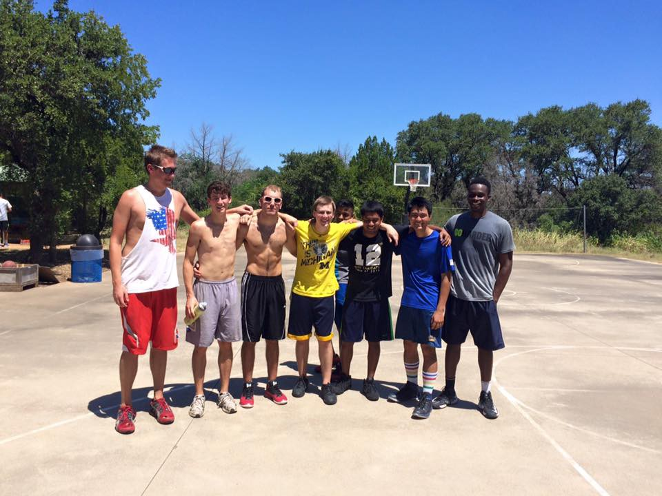
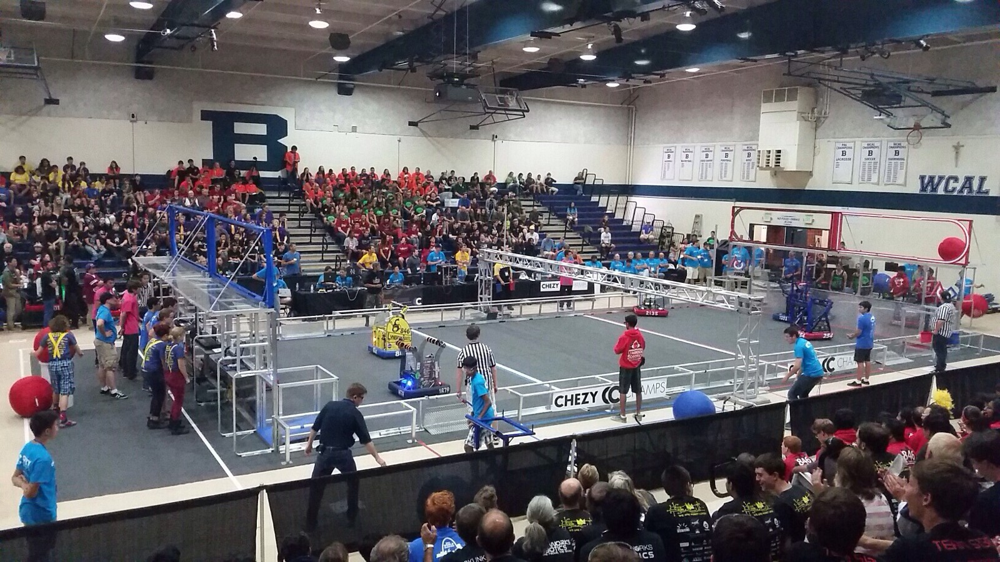
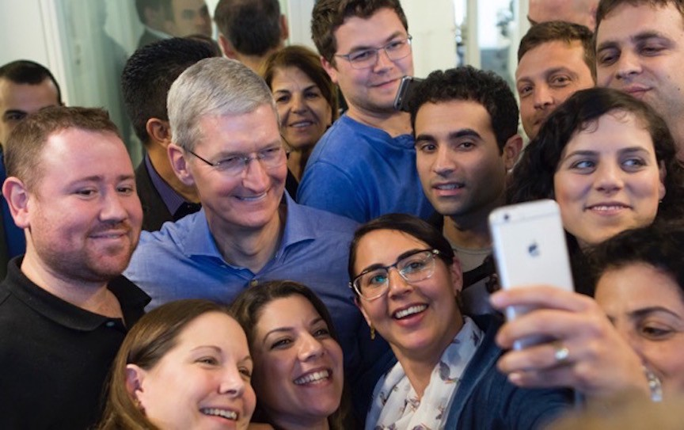

As this semester ends, I stand on the precipice of a fake graduation: I’ll be spending eight months working in the real world in the California Bay Area far away from Ann Arbor and the world I currently know. I’ll be in the Bay Area from May through December (if you’re in the area, I would love to see you — please message me via Twitter or Facebook or carrier pigeon!), but more then that: I’ll be far away from all of my friends and family in Michigan and southwest Ontario.
With this small life transition in the next month precipitating a huge life transition post-graduation, I’ve started feeling… a bit lost. Growing up through the modern American school system means having academic goals set reguarly for myself. But the real world isn’t as straightforward, and this transition seemed like an opportunity to come up with some real life goals, based around ideas and thoughts that I’ve had in my head that have been blocked by schoolwork or school-related activities. With a large amount of time to spend outside of work, I want some ideas of how to spend that time well.
Another goal is to remind my future self of my current mindset and priorities. This is something that I think I struggle with a lot — understanding myself, and how I change over time.
I’ve also tried to structure this list as achievable and/or concrete (oftentimes quantitative) goals. I’ve included some goals at the bottom that are more general, but I wasn’t sure how to make achievable or concrete in a good way.
“Personal growth” is in quotes because I really don’t know what I want out of personal growth, or what personal growth really means. However, all of the following were things I wanted to do, that others seem to describe as personal growth — in that they are .
I think I struggle to meet and get to know new people, well, because I’m on the shyer side when it comes to completely new people, not that sociable, and poor at making small talk. I want to meet five new people, one-on-one, over a meal or some other prolonged activity (at least an hour) to meet new people, and simply practice social skills. Ideally, at least some of these are dates, and not all of them are over food but incorporate other activities (like hiking).
I’ve spent a total of four days on the West Coast (or west of Austin, TX) in my life — I want to make the most of visiting and exploring the great Western United States and its nature. I’ve only been camping for a total of three nights, and I don’t have a specific list.

Other then setting a goal, I don’t have a great plan to achieve this one, which is intentional: I want to meet other like-minded people who are also motivated to explore. I’ve been thinking about places like Yosemite, Big Sur, and Mission Peak, as well as Crater Lake, Lake Tahoe, Desert Valley, Sequoia National Park, and Land’s End. The sheer number of iconic opportunities in California, versus Michigan, is dazzling.
I’ve always had an interest in photography (after buying a dSLR in eighth grade), but haven’t had time to pursue it in college. Without the obligations of school, I should have time to get more use out of my dSLR camera (or maybe buy a new one, since mine is from 2008 and has less megapixels then my iPhone) or take casual, opportune shots with my iPhone. Setting a goal of one high-quality photo worth sharing on my Flickr or with friends is a way to begin trying to do that again. I want to explore more portrait photography, which ties in nicely with some of my other goals that have social elements.
The stereotypical reading goal is 24 books in a year, or two per month. I want to hold myself to that as well, and I’ve started actively tracking what I’ve read on Goodreads. I‘m starting this week with the historical fiction novel It Can’t Happen Here by Sinclair Lewis, which describes the rise of a populist fascist US President in the mid-1930s (perhaps a bit appropriate to this year).
This is inspired by someone else (for whom I can’t find the link), who has documented for multiple years what content they consumed (primarily video, books, and podcasts) for several years, to look at and reflect on later. I attempted to do the same job in January and stopped due to failing to remember between school, coursework, and extracurriculars — so I’d like to renew my focus on that.
This might be something I post monthly about on Medium, to keep myself on track (and as recommendations to other people).
I currently weigh more today then I have ever weighed in my life before, and not in a good way. This trend needs to change immediately. Even better: I’d like to finally become toned, remove most of my fat, and not be ashamed to see my body in the mirror. Here are my actionables on that:

I currently weigh more today then I have ever weighed in my life before, and not in a good way. So, I want to get up and move significantly every day. At the minimum, this means a gym visit or a run of over two miles, or playing frisbee or basketball or skateboarding. Just something physical and active. As a subgoal, I want to play hockey (street or on a rink) at least once.
As part of physical activity every week, I want to have a regular gym routine. I’m not 100% sure what my routine will be (other then that I don’t want to skip leg day) or how it will fit into my schedule yet, but there’ll be a gym at the apartment complex I’ll be living at, and possibly at work. I’m thinking about trying to do this as part of my morning pre-work routine for the first time in my life.
I’ve always wanted to run a 5k without stopping. If I can get into a routine of running, and slowly pushing myself, this should definitely be accomplishable by December.
I want to seriously apply to computer science doctorate (and maybe masters’) programs in the upcoming year (most applications are due in December). That means, in this order: scouting out possible schools (ideally in CS systems research), trying to make connections with possible research advisors at those schools, studying for and taking the GRE this summer, getting three recommendation letters, applying for a NSF Graduate Fellowship, and making an amazing personal statement (especially with my GPA). Not simple or straightforward, but something I want to explore.
I’m not sure if I want to go to grad school, but it has a lot of appeal to me, and I’d like to keep the option open.
Pretty clear-cut: I want to perform extremely well during my internship/co-op-, so I can have the ability to return after I get my undergraduate degree, regardless of what I want to do next with my life.

I haven’t given back to the high school robotics community (specifically the FIRST Robotics Competition) since high school graduation and leaving Team 2337, the EngiNERDs, due to college. I’d like to check out the California FRC scene to see if it’d be something I’m interested in, and volunteering at the premier offseason in the area, Chezy Champs, seems like a great way to do so.
I had never owned a Nintendo handheld console, until I walked into an Ann Arbor gaming store in August and bought an old DS Lite and Pokemon Platinum. I think I’m missing out on an important part of everyone’s childhood if I don’t beat the Elite Four. I’m currently stuck at Spear Pillar, after nine months of having owned the game with school and other activities in the way, so hopefully I can pick it back up in California.

If I’m going to be in the Valley for eight months, attending various intern and different companies’ events, I desperately want a ridiculous selfie with Larry Page, Tim Cook, Sheryl Sandberg, Jony Ive, or someone of that status.
California is full of amazing, iconic racetracks like Laguna Seca, Thunderhill, Sonoma/Infineon, and Willow Springs. I want to get out to at least one, and get a ride around it (driving, or as a passenger), hopefully with friends. That likely means going to a track day, and striking up conversations with fellow automotive enthusiasts.
Like the previous item, the main goal here is to actually invigorate my love of cars by finding people who are also into cars, and going to awesome events with them. SF Cars and Coffee is a small impromptu car show/discussion on the first Saturday of every month on Treasure Island, and Pebble Beach’s Concours d’Elegance, an insanely amazing car show of iconic prewar and postwar cars, is from August 16–21.
After my friends Mayank, Pavi, and Connor picked up solving Rubik’s cubes this semester, I was reminded that I’ve always wanted to learn to solve one.
I got a skateboard for Christmas, and I’m going to be in California. Hopefully it’ll be a useful way to commute to work, and I can become comfortable that way.
For most of these goals, I’m just not sure how to tackle them in a quantitative or achievable way. But I want to be thinking about them, and possibly come up with milestones as my time in California goes.
My nails have not really grown in — I’ve left them bitten to the quick for years, and it needs to end. I’m just not sure how to constructively try to work on this, other then just cold turkey forever (definitely an option, but I’ve tried it before and failed). If you have any advice, please send me a message!
I’ve had numerous people, for years, tell me that my daily outfits are boring and very similar to other people. I have also rarely received compliments on my haircuts, especially not when I rocked the Bieber bowl cut. I want to reverse this trend by being more conscientious about what I wear, and finding a haircut that myself and others enjoy.
Last summer living in Austin, removed from Michigan and my family, I began to conservatively cook for myself. I’d like to become even better and take this to the next level, although I’m not sure how to do so yet.
I’ve had a couple of ideas, primarily related to the FIRST Robotics Competition, and I might try to see where I can get with them before and after my work term.
I’ve essentially stopped playing video games since I went to college. I’ve never fully determined if not playing video games was a good or a bad thing, but it’s something I think about. I think I enjoy social video games the most — whether playing Team Fortress 2 with friends online, or Super Smash Bros. or Forza in person — but a lot of video games are solitary activities that waste time, and don’t necessarily contribute a lot to building interesting, healthy people. There are many video games that have various benefits, and having something mindless for downtime is always good — but spending hundreds of dollars on that… I haven’t made up my mind.
Documenting these goals seems like a good first step! So does writing about the monthly content I’m consuming.
I don’t anticipate on achieving all of these goals that are not the physical fitness ones. A lot of these goals are very normal/“stereotypical”, but I don’t think that’s a bad thing. Trying new things to learn more about one’s self, physical fitness, and having fun are all important things that nearly all humans seek and enjoy. Having some sort of idea of how to achieve that — by, say, making a list of possible ideas that have been spun around in one’s mind a lot — is helpful and useful.
I’ll miss everyone in Michigan and southwest Ontario, and look forward to seeing you around the next MHacks in the fall, Thanksgiving, and after December!
I want to give a big thanks to Stefan Aleksic’s //DONE article for inspiring this goal creation process, and some of the goals themselves.